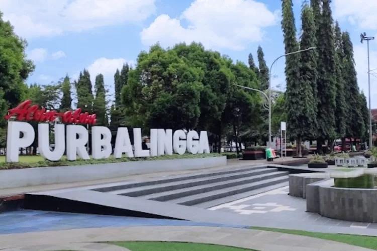
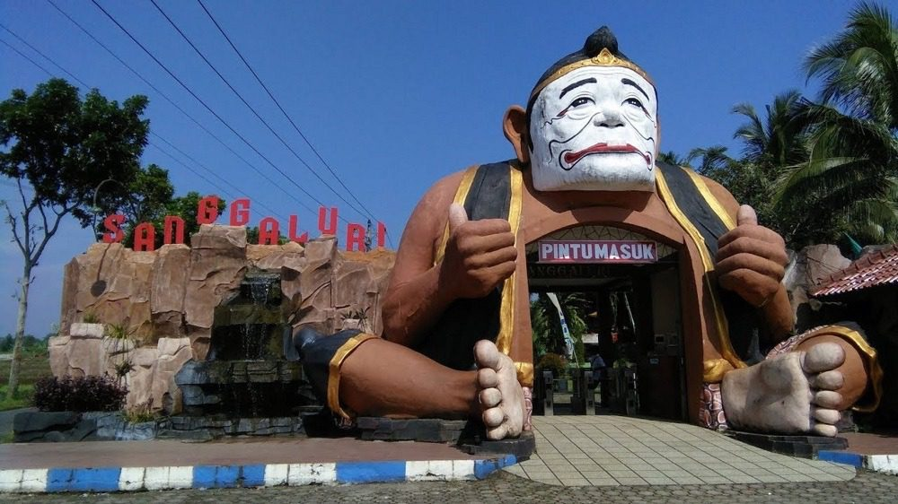
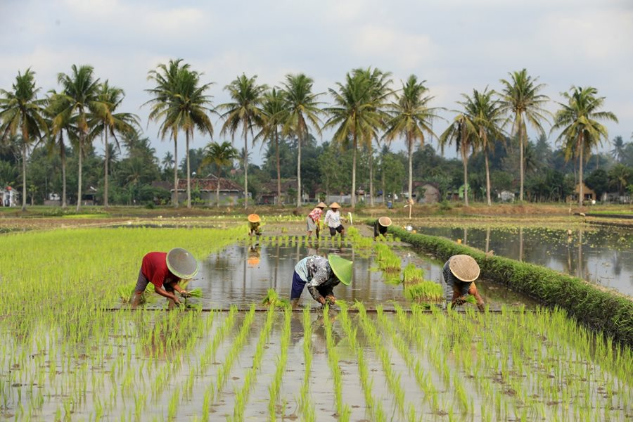

Kota Purbalingga terletak di Provinsi Jawa Tengah, Indonesia. Secara geografis, Purbalingga berada di dataran tinggi, dikelilingi oleh pegunungan, seperti Gunung Slamet yang merupakan gunung tertinggi di Jawa Tengah. Dengan ketinggian sekitar 500-1.200 meter di atas permukaan laut, kota ini memiliki iklim sejuk dan udara yang segar.
"Purbalingga memiliki sejarah yang kaya dan beragam. Sebagai salah satu daerah di Jawa Tengah, Purbalingga mengalami berbagai pengaruh budaya dan politik sepanjang sejarahnya, mulai dari masa kerajaan hingga masa kemerdekaan Indonesia. Purbalingga juga dikenal sebagai daerah yang memiliki banyak situs bersejarah, seperti Candi Sanggaluri dan peninggalan-peninggalan dari masa Hindu-Buddha.
Ekonomi Purbalingga didominasi oleh sektor pertanian, dengan komoditas unggulan seperti beras, sayuran, dan buah-buahan. Selain itu, industri kecil dan menengah, seperti kerajinan tangan dan makanan, juga berperan penting dalam perekonomian lokal. Purbalingga dikenal dengan produk khasnya, yaitu "keripik singkong" dan "tempe mendoan."
Budaya Purbalingga sangat kaya, dengan berbagai tradisi dan kesenian lokal yang masih dilestarikan. Di antaranya adalah kesenian wayang kulit, tari-tarian daerah, dan berbagai festival budaya yang diadakan setiap tahun. Salah satu festival yang terkenal adalah Festival Purbalingga yang menampilkan berbagai atraksi seni dan budaya.
Purbalingga menawarkan berbagai destinasi wisata alam yang menarik. Beberapa tempat wisata yang populer antara lain:
Sebagai gunung tertinggi di Jawa Tengah, Gunung Slamet menjadi tujuan bagi para pendaki dan pecinta alam.
Pengunjung dapat belajar tentang proses pembuatan batik dan membeli produk lokal.
Pengunjung dapat menikmati berbagai pertunjukan seni dan budaya lokal.
| Tahun | Jumlah Pengunjung | Keterangan |
|---|---|---|
| 2019 | 1.650.075 | - |
| 2020 | 800.922 | Masa Pandemi Covid19 |
| 2021 | 959.884 | Masa Pandemi Covid19 |
| 2022 | 1.497.000 | - |
| 2023 | 1.796.732 | - |